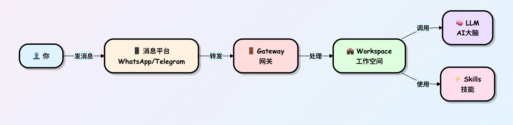

How OpenClaw Works
OpenClaw is not an ordinary chatbot, but a personal secretary living in your computer. It can receive commands through chat applications such as WeChat, WhatsApp, and Telegram, help you send emails, check calendars, open browsers, run commands, and even work automatically 24 hours a day!

Core Concepts

| Concept | Analogy | Function |
|---|---|---|
| Gateway | Front desk receptionist of a building | Receives all external messages and distributes them to the correct workspace |
| Workspace | Your private office | Handles specific tasks, manages conversation history and skills |
| LLM (Large Language Model) | AI consultant brain | Understands your intent and generates replies |
| Skills | Tools in the toolbox | Executes specific functions (check weather, write code, manage schedules, etc.) |
| Channels | Communication devices | Connect different messaging platforms |
What exactly is OpenClaw?
OpenClaw is afully open-source AI assistant that runs on your own computer(formerly called Clawdbot, later renamed).
It doesn't just chat like ChatGPT; it actually takes action:
- You say in WhatsApp: "Check tomorrow's flight for me," and it can automatically open a browser, log into the airline's website, and send you a screenshot.
- It supports hundreds of skills, and the community keeps adding more.
- It has long-term memory (remembers what you like) and can even generate new skills on its own.
- Most importantly:All data stays on your computer, not uploaded to the cloud, privacy-safe。
Core idea:Connect the AI large model (brain) + local tools (hands and feet) + chat software (mouth and ears), making AI truly become your computer butler.
Overall Architecture: Gateway is the brain command center
The most core part of OpenClaw is calledGateway (gateway). It's like the central control panel in your home; everything revolves around it.

Simple explanation of each part:
- Channel Bridge (channel bridge): Responsible for "handshaking" with chat software like WhatsApp and Telegram. For example, using the Baileys library to connect to WhatsApp.
- Gateway: The only running process (occupies one port, default 18789), like a switchboard operator, forwarding messages to the AI.
- AI brain: What actually thinks is the external large model (you provide the API Key); Gateway is only responsible for "calling it to work."
- Tools & Skills: AI's hands and feet, e.g., opening a browser, reading/writing files, sending emails.
- Memory system: Like a notebook, AI won't forget what you said last time.
How does a message become an action?
Let's use a real example: "In WhatsApp, say: help me organize today's emails into a summary and send it to me."
The flow chart is as follows:

Detailed breakdown:
- Receive instruction: You send a message → the chat software's Bridge pushes the message to Gateway.
- Search memory: Gateway opens your "personal profile" (Session + Memory), knowing you're a returning user and what tone you liked last time.
- AI thinking: Pack the message + memory and send them to the AI brain. The AI acts like a smart secretary: "Okay, I need to read the email first, then summarize."
- Call tool: The AI says "I want to use the Gmail skill." The Gateway executes it in a secure sandbox (to prevent the AI from randomly modifying files).
- Execute + feedback: The tool gives the result to the AI, and the AI writes a summary.
- Reply to user: The Gateway sends the summary back to WhatsApp. And you receive it!
Overall Architecture
Three-tier architecture design
OpenClaw adopts a classic three-layer architecture. Let's understand it layer by layer from the outside in:

Why design it this way?
Analogy: Imagine a large company
- Outer layer (user interface)= Customers can contact the company via phone, email, WeChat, and other channels
- Middle layer (Gateway)= Front desk reception, which handles all customers uniformly and routes them to the appropriate departments
- Inner layer (Workspace)= Different business departments, each responsible for different tasks
- Bottom layer (capability layer)= The company's resources (expert advisors, tools and equipment, etc.)
Detailed explanation of core components
Gateway: Unified portal
What is Gateway?
Gateway is the front door of OpenClaw. All external messages must pass through here first.

Gateway's three main responsibilities:
1. Authentication
Ensure that only platforms you authorize can connect

2. Routing
Send messages to the correct workspace

3. Logging
Record all interactions for convenient debugging and auditing
Command to start the Gateway:
# 启动网关，监听 18789 端口 openclaw gateway --port 18789 --verbose
Workspace: Your private office
What is Workspace?
Workspace is where tasks are actually processed. You can have multiple workspaces, each responsible for different things.

A typical Workspace configuration example:
# workspace-personal.yaml name: "个人助理" llm: provider: "anthropic" # 使用 Claude model: "claude-sonnet-4" apiKey: "sk-ant-xxx" skills: - weather # 查天气 - calendar # 管理日程 - email # 处理邮件 - web-search # 网页搜索 settings: language: "zh-CN" temperature: 0.7 max_tokens: 4000
Multi-workspace usage scenarios:

LLM: AI's brain
What is LLM?
LLM (Large Language Model) is the intelligent brain of OpenClaw, responsible for understanding your intent and generating replies.

LLMs supported by OpenClaw:
| provider | Model examples | Features | Applicable scenarios |
|---|---|---|---|
| Anthropic | Claude Sonnet 4 | Balance, safety, good multilingual support | Daily conversation, writing |
| OpenAI | GPT-4 | Professional, broad knowledge | Professional tasks, analysis |
| DeepSeek | DeepSeek-V3 | Strong coding ability, inexpensive | Programming assistance |
| Local deployment | Ollama | Completely private, free | Privacy-sensitive scenarios |
Channels: Connecting to the outside world
What are Channels?
Channels are "adapters" that connect various messaging platforms.

The work of each Channel:
- Receive messagesRetrieve user messages from the platform
- Format conversionUniformly convert to the OpenClaw internal format
- Send replySend OpenClaw's replies back to the platform
Example: Telegram Channel workflow

Message flow process
Now let's take a look at how a complete message flows through OpenClaw:
Complete message flow diagram

Detailed step analysis
Steps 1-3: Message reception and standardization
After a user sends a message on Telegram, the Telegram Channel converts it to OpenClaw's standard format:
{
"platform": "telegram",
"channel_id": "telegram_123",
"user": {
"id": "user_456",
"name": "Alice"
},
"message": {
"type": "text",
"content": "上海明天天气?",
"timestamp": "2024-03-09T10:30:00Z"
}
}
Steps 4-5: Authentication and Routing
Gateway checks this message:
- Is the source authorized?
- Which Workspace should it be routed to?
- Does the user have permission?
Steps 6-8: AI understanding and decision-making
Workspace prepares the complete context and sends it to the LLM:
[系统提示] 你是一个个人助理，可以使用以下技能： - weather: 查询天气 - calendar: 管理日程 - ... [对话历史] User: 你好 助理: 你好！有什么可以帮你的？ [当前消息] User: 上海明天天气?
Steps 9-12: Skill Execution
The LLM decides to call the weather skill, and the Workspace executes it and obtains the results:
{
"location": "上海",
"date": "2024-03-10",
"weather": "晴转多云",
"temperature": "18-26°C",
"humidity": "60%",
"wind": "东风 3-4级"
}Steps 13-17: Generate a reply and return it
The LLM generates a natural language reply based on the weather data and sends it back to the user along the same path.
Skill System
What are Skills?
Skills are the "capability modules" with which OpenClaw performs specific tasks. If OpenClaw were a person, skills would be the various abilities this person has mastered.

Structure of a skill
Each skill includes:

Example: Definition of the weather skill

Skill invocation process

Skill security mechanisms
OpenClaw has strict security controls on skills:

Permission types:
| Permission | Description | Example |
|---|---|---|
network |
Network access | Check weather, search web pages |
filesystem |
File system | Read/write files |
email |
Email access | Send/receive emails |
calendar |
Calendar access | Manage schedules |
system |
System operations | Execute commands |
Complete workflow
Let's connect all concepts through a real scenario:
Scenario: Sending daily weather reports on a schedule
Requirement: Receive today's weather + schedule reminders via Telegram every morning at 8 AM

Configuration code
# workspace-daily-report.yaml
name: "每日报告助理"
# 定时任务
cron_jobs:
- name: "早间报告"
schedule: "0 8 * * *" # 每天早上8点
action:
type: "send_message"
channel: "telegram"
template: |
请生成今日报告：
1. 查询我所在城市的天气
2. 列出今天的所有日程
3. 以友好的方式呈现
# 可用技能
skills:
- weather
- calendar
# LLM 配置
llm:
provider: "anthropic"
model: "claude-sonnet-4"
Messages received by the user
早安！今日简报 天气情况 上海今天多云，气温 15-23°C 建议穿着：薄外套 降雨概率：10% 今日日程 - 09:00 - 10:00 团队晨会 - 14:00 - 15:30 客户演示 - 16:00 - 17:00 代码评审 温馨提示 今天有 3 个会议，建议提前准备演示材料。
Data flow and state management
How is data stored?

Data types and storage methods:
| Data type | Storage method | Retention time | Example |
|---|---|---|---|
| Current session state | Memory | Until session ends | Ongoing conversation context |
| Conversation history | Local database | Configurable (e.g., 30 days) | Past chat records |
| User configuration | Configuration file | Permanent | API keys, preference settings |
| Skill data | Managed by the skill itself | Depends on the skill | Schedules, email drafts |
| System logs | Log files | Configurable | Errors, debugging information |
Extensibility and plugin ecosystem
How to add new features?
OpenClaw's design allows easy extension:

Skill installation process